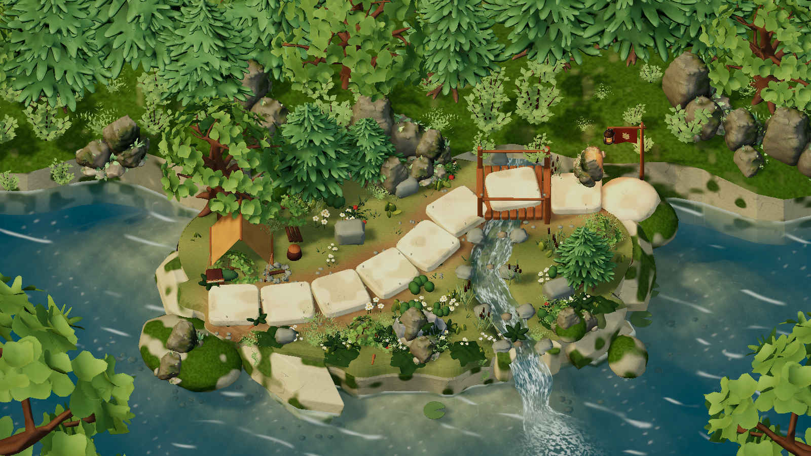
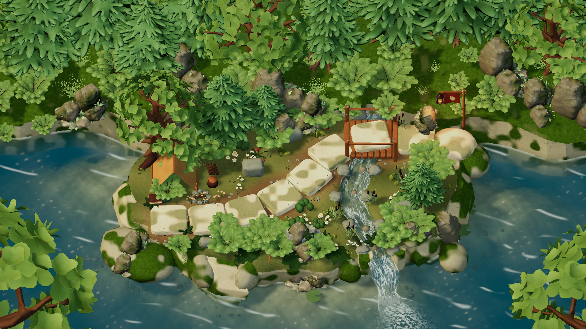
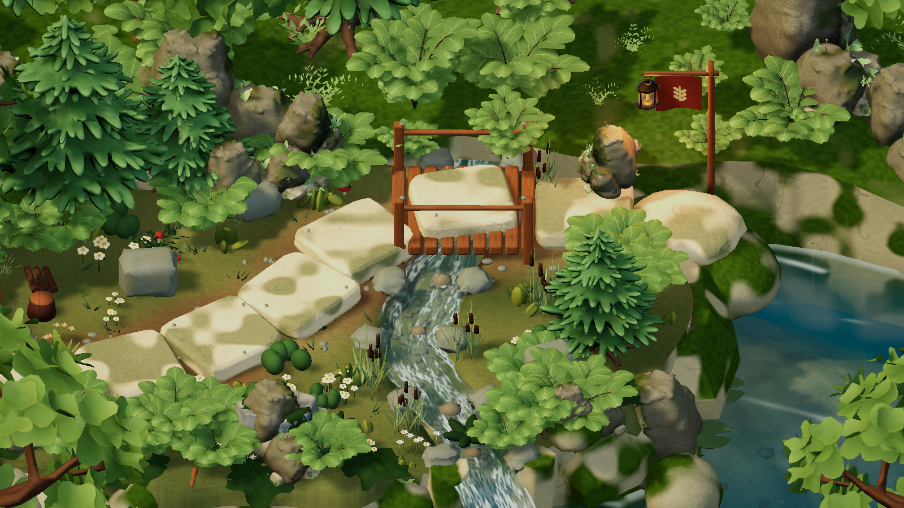
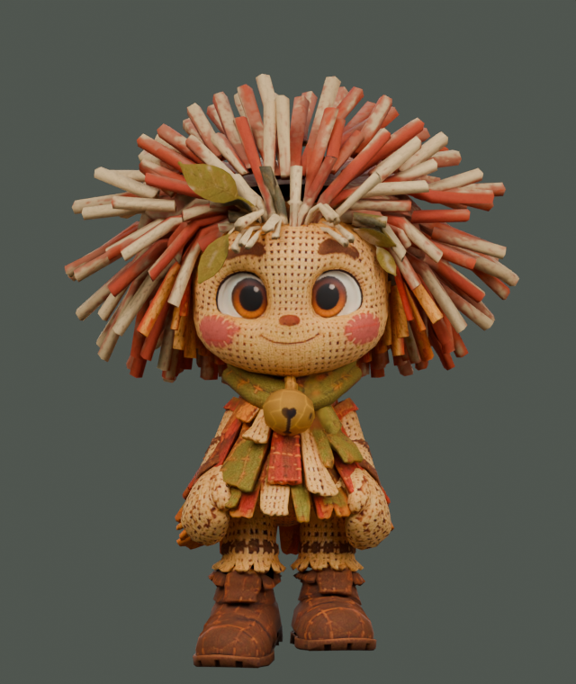
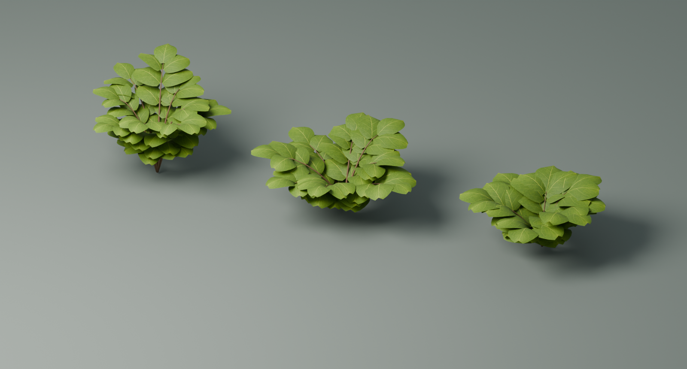
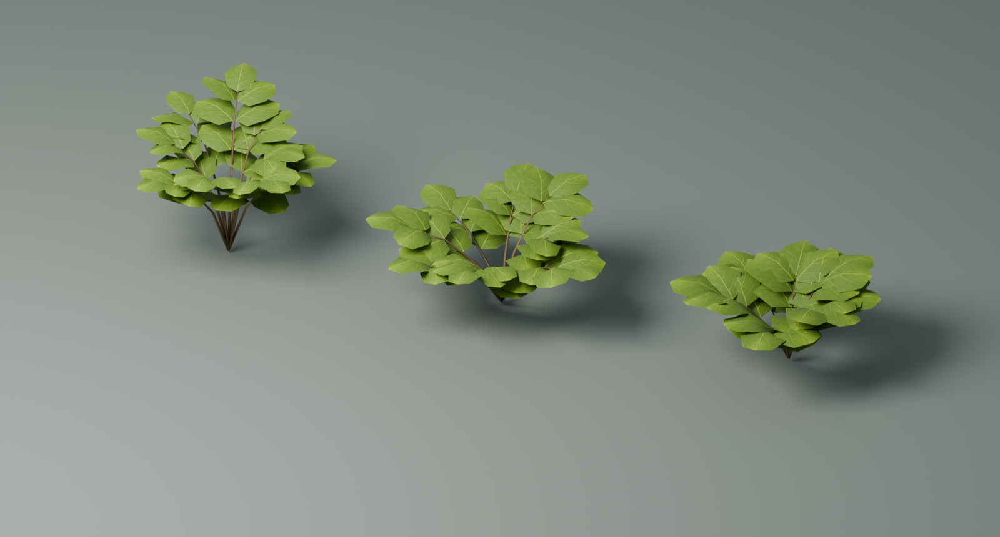

Согласованный проход по растительности, поверхности острова и материалам персонажей. Уровни сохраняют общую диораму; флажки и небольшие растения у лагеря различаются. Игровые плиты и правила движения сохранены.



Пена, мелкая рябь и солнечные блики сохранены. У водопадной пены нарушена регулярная сетка шума. Земля получила повторяемый слой мелких камешков и normal map; камни — сдержанный рельеф и влажную полосу у воды.
Шесть оттенков флажка и шесть вариантов небольших цветочных групп у лагеря. В отдельных вариантах добавлены прибрежные камыши. Эти детали не меняют маршрут.

Царап получил льняную основу, рыжую и оливковую пряжу, мягкие щёки и локальный материал латунного бубенчика. Исходные 2D-портреты сохранены.
У Тиша, Лумы и Бума снижена пластиковая гладкость и добавлен тонкий рельеф ткани. Глаза используют отдельные глянцевые материалы. Риги, геометрия и клипы анимации в этом проходе не изменялись.


64 группы растений заменены в игровом prefab. Уменьшена плотность мелких пучков травы. Новые листья используют существующий шейдер мягкой листвы и общий ветер.
Diceforge.View.Editor.BetaFoliageSetup.Build() — импорт трёх растений и LOD.Diceforge.Editor.CharacterFinishSetup.Apply() — карты и материалы четырёх персонажей.Diceforge.View.Editor.BetaWorldSetup.Build() — подключение к FirstTrail8, берег и шесть вариантов декора.Diceforge.EditorTools.BetaWebBuild.Build() — WebGL-сборка в C:/Backforge/Builds/GlimblehopBetaPolish. Итог записывается в status.json; таймаут соединения с редактором сам по себе не отменяет сборку.Результат WebGL-сборки · Проверка HTTP · Контроль игровых плит